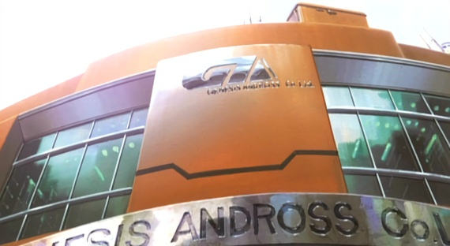
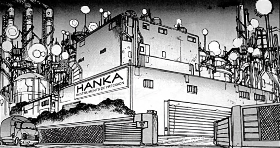
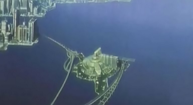
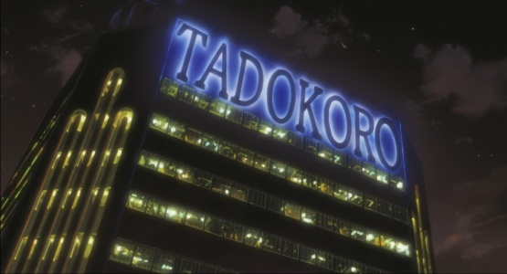
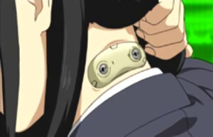

CORPORATIONS
Bien sûr, il y a beaucoup d'autres corporations dans le monde de Ghost in the Shell. Ci-dessous sont présentées celles mentionnées dans les différents médias.
Derumo : Une entreprise qui a suivi Tokura dans le développement du cerveau cybernétique. Elle s'est ensuite spécialisée dans la fabrication du noyau des cyber-cerveaux, et contrairement à Tokura elle continue avec succès dans cette voie.
Genesis Androids / Genesis Andross Co. : Célèbre entreprise de robotique, qui propose un large choix d'androïde, principalement féminins. Des rumeurs indiquent que beaucoup de ces modèles ont été illégalement modifiés. Les modèles de Genesis sont très présents dans le marché clandestin des poupées d'amour (love dolls). Elle est aussi à l'origine de l'androïde GA-07-GL Jeri, un des modèles les plus populaires chez les accros de la technique, bien qu'il soit considéré comme quelque peu dépassé.

Hanka Precision Instruments : HKI est un des principaux fabricants de robots autonomes. Il fabrique toute une gamme de modèles allant de la machine de guerre au personnel de maison. Récemment, l'entreprise a été impliquée dans un scandale impliquant le chargement de Ghost d'enfants dans un robot connu comme le "Tomliand Prototype", pour lui donner une personnalité humaine plus perfectionnée. Lorsque ces robots ont commencés à devenir fou furieux le complot a été démasqué et le président de HKI arrêté. Depuis l'entreprise est toujours en activité, mais ses profits ont sérieusement diminués. Les analystes financiers expriment de sérieux doute sur sa capacité à survivre au cinq prochaines années. Une autre corporation, Locus Solus, a tenté de mettre en oeuvre le même processus, avec des résultats plus satisfaisants, mais avec des risques de dérapages encore plus grands.

Japan Micro Industries : Autre cible du Laughing Man, JMI était à l'origine un fabricant de micromachines. Ils les considèrent toujours comme leur principale source de revenus.
Kenbishi Heavy Industries : Une des plus grosses corporations existante, Kenbishi produit des chars, notamment ces célèbres chars multipèdes, des hélicoptères et plus généralement de l'armement. Elle dispose d'un dôme biodesic où elle teste ses machines autour d'une petite ville abritant son quartier général. Elle fabrique aussi des neuropuces, utilisables par les Tachikomas. La capacité de Kenbishi a survivre aux scandales lui vient de son énorme capitalisation boursière. Elle a été impliquée dans le vol de brevets de ses propres scientifiques, de même que dans le carnage provoqué par l'un de ses chars, qui s'était évadé du dôme. Malgré cela Kenbishi s'est toujours débrouillé pour rester sur le marché.
Kuromatsu Electrics : Compagnie de taille moyenne, Kuromatsu Electrics travaille surtout dans les environs du vieux Tokyo. Elle y emploie des marginaux et des réfugiés, leur offrant des corps cybernétiques, impliquant que 98% de ses employés soient cybernétisés, sous une forme ou une autre. Elle a découvert une centrale nucléaire dans les environs de Tokyo et a essayé d'extraire illégalement du plutonium. Le gouvernement a empêché l'opération de se poursuivre, mais Kuromatsu Electrics n'a jamais été inquiété.

Kyo-Re : Kyo-Re est un fournisseur de matériel militaire, notamment les camouflages thermo-optiques. Ils sont affiliés à Poséidon, un autre nom pour Greater Japan Technology and Research (Recherche et Développement du Grand Japon).
Locus-Solus : Un petit nouveau, qui est apparu brusquement sur la scène des hautes technologies avec des concepts de robots révolutionnaires. Avec des années d'avance sur Genesis ou Hanka, Locus-Solus a choisi de commencer petit, et de ne se développer qu'à partir de la mise en place des lignes de productions des Gynoids. Des rumeurs sont rapidement apparues autour de ce modèle capable de passer pour humain, sans matériel médical pour le détecter. Les rumeurs ont rapidement laissé place à la réalité. L'opinion publique voit d'un mauvais oeil les compagnies qui mettent en service des androïdes sexués, aussi beaucoup préfèrent ne pas en produire directement mais laisser les consommateurs bricoler leur modèle. Locus-Solus, elle, a choisit de proposer des modèles Hadaly pré-modifiés. Pour passer au travers des réglementations existantes et des questions de décence elle a choisit de produire ses modèles sur des bateaux usines ancrés dans les eaux internationales. De là, la compagnie produit des robots impressionnants, mais elle a choisit de conserver un siège au Japon, à Bertrave.
Locus-Solus s'est effondrée lorsque des preuves ont été mises à jour, indiquant que les capacités des ses robots provenaient des même manipulations que Hanka, c'est-à-dire l'implantation de Ghost d'enfants dans des androïdes, bien qu'avec de meilleurs résultats. Cependant les crises des Hadalys furent encore plus graves que celles des modèles Hanka, résultants dans le meurtre de leur propriétaire. A cause de la gravité de ces incidents Locus-Solus n'a pu se couvrir à temps et s'est effondrée quand l'opinion publique en a eu vent.
Meditech Corp : "Donnez nous des gènes, ont vous rendra des organes". Meditech Corp est une des rares entreprises médicales a ne pas s'occuper exclusivement de cybernétique, et a fait de cette originalité sa force. Alors que les autres entreprises se concentrent sur la production de machines, Meditech Corp a choisit de fournir des remplacements organiques pour le grand public, devenant le premier fournisseur mondial de greffes. La compagnie a commencé en achetant, vendant et distribuant des organes préalablement remplacés par des greffes cybernétiques. Il les fournissait à ceux qui ne voulaient pas ou qui ne pouvaient pas se voir implanter des machines. A partir de là Meditech a commencé à explorer les possibilités du clonage d'organes, lui permettant de ne pas enfreindre la réglementation contre le clonage de corps entiers. La technique consiste à implanter les gènes du client dans un porc, qui pourra donner des organes tout au long de sa vie. Meditech élève aussi des porcs destinés à fournir des organes "génériques". Si un client n'utilise pas les organes au cours de la vie du porc, ils sont vendus sur le marché libre. Le PDG de Meditech était tellement impliqué dans son industrie qu'il a vendu ses propres organes et fait implanté son cerveau dans un corps cybernétique de type Jameston. Meditech est une filiale du groupe Poséidon. Elle fait fonctionner ses fermes porcines dans différents pays.
Meditech Bherel a été la cible d'attaque du Front de Libération Humains et ses biens ont été détruits, et tous les porcs tués. Avec le développement des techniques de clonage la technique de production porcine est de moins en moins populaire, bien qu'elle reste la moins chère et que les concurrents de Meditech la considèrent comme leur seule concurrente sérieuse.
Megatech : Megatech est le principal fabriquant de corps prosthétiques, de robots et d'intelligences artificielles dans le monde. Megatech a la réputation de produire des équipements de haut niveau, notamment le très populaire corps artificiel Classe-A. Elle dispose de la plus large gamme et des plus grandes manufactures de corps artificiels au monde. Elle a été la première entreprise a concevoir la prosthétique comme un moyen d'amélioration plutôt que comme un moyen de remplacement. Tous les cyborgs de la Section 9 ont des corps et des équipements provenant de Megatech, et la Force d'Auto Défense a de nombreux marchés en cours avec elle. Leur quartier général est situé sur une île artificielle au large de Newport, île qui est en fait le QG en lui-même.

MicroTel : Une entreprise de micromachines assez récente dans cette industrie; c'est une cible du Laughing Man.
Nanoplant Industries : Une entreprise de micromachines; c'est une autre cible du Laughing Man.
Nanyou New Agency : L'agence de presse NNA est souvent accusée d'être sous l'influence du gouvernement, ce qui est confirmé par sa ligne éditoriale contre les réglementations sur les réfugiés. Elle a été la cible du groupe terroriste des Onze Individualistes.
Neutron Company : Leader américain de la cybernétique, Neutron Company est une des rares entreprises de ce genre ayant percée au Japon.
Poséidon Industrial Co. : Poséidon est une entreprise majeure dans le domaine de la cybernétique et des micromachines, connue pour ses technologies de pointe. C'est un des poids lourds de l'économie japonaise, possédant des contrats avec la Force d'Auto Défense pour des fournitures d'armement et de technologie. Poséidon, bien qu'inconnue à l'époque pour sa maîtrise des micromachines, est partiellement créditée pour leur utilisation dans le cadre du Miracle Japonais. Cet exploit a mis Poséidon au centre de l'attention, et dans une position de domination jusqu'à présent incontestée. En 2032, la compagnie a été mêlée à une conspiration gouvernementale impliquant l'Agence de Renseignement du Cabinet et le groupe terroriste des Onze Individualistes.
En résumé, c'est une des plus grosses corporations sur Terre, avec des ramifications dans tous les aspects du monde moderne. Elle contrôle un grand nombre de filiale au nombre desquelles, Meditech, et fait fonctionner une gigantesque collection d'îlots urbains artificiels.
Rabbit-logo Courier : Une des compagnies de courriers illégale qui existe dans la cité de Niihama. Elle a un nom officiel mais est désignée sous le nom de "la compagnie avec le lapin comme logo", en raison de l'excellent impact publicitaire de leur mascotte. Les courriers n'acceptent que du cash pour leur course, et refuse la monnaie électronique, les chèques, ou autre. La moitié de la somme est due tout de suite le reste de la somme étant payé seulement après que le code de réception du paquet ai été envoyé. La compagnie est prête à transporter n'importe quoi si on y met le prix.
Rossini Air Line : Une célèbre et opulente compagnie d'aviation asiatique.

Seburo Corporation : Un fabricant d'armes à feu fondé en octobre 2024. Maintenant la plupart des armes modernes acceptent les munitions Seburo de type caseless.
Sagawa Electronics Inc : Sagawa Electronics Inc. est le coeur de la corporation Sagawa. Le groupe Sagawa est une Zaibatsu (conglomérat) qui a des intérêts dans tous les secteurs corporatistes. SEI était au départ une entreprise de taille moyenne qui fabriquait de l'électronique : optique, cybernétique, grille pain, etc., avant que le Bureau de la Sécurité Publique ne s'en mêle pendant la guerre. Un homme du nom de Kagashi (maintenant Ministre de l'Intérieur) a utilisé la compagnie pour s'approcher, via leur géofront à Betrave, des bases russes. Chemin faisant il a détourné de l'argent pour lancer le groupe Sagawa vers un futur prospère. A noter également que SEI a été la cible du Laughing Man pendant sa campagne de terrorisme.

Satsuma Meditechs : Plus grosse entreprise de Kyushu, Satsuma été la cible du Laughing Man pendant sa campagne de terrorisme. Bien qu'étant un fabricant de micromachines, Satsuma et la seule entreprise à ne pas avoir reçu de fonds d'état quand le Laughing Man les a fait chanter.
Serano Genomics : Cible principale de la campagne de chantage du Laughing Man, Serano Genomics a vu son PDG enlevé et rançonné, constituant le premier acte de sa campagne. Serano a été un des pionniers de l'industrie des micromachines et a été la première entreprise à déposer un brevet médical pour les soins de la sclérose des cerveaux cybernétiques. La société a été renflouée par le gouvernement pour compenser ses pertes boursières dues aux actions du Laughing Man. Elle a par la suite reconnu que l'annonce du traitement été prématuré et que les nanites développées pour lutter contre la sclérose été inefficaces. Leur PDG a ensuite été assassiné avant de pouvoir témoigner. Le quartier général de la compagnie est situé en Hollande.
Tadokoro Trading : Petite compagnie, Tadokoro a été la cible d'un groupe de voleurs technophiles connu sous le nome de Cash Eye. Par la suite, leur président fétichiste amateur de compagnons androïdes a été arrêté pour détournement de fond.

Tokura Electronics : Bien qu'ayant été un des pionniers de la cybernétisation du cerveau, Tokura n'est plus aussi importante qu'auparavant. Ancien fer de lance de l'industrie cybernétique nippone, elle s'est vue devancée par des entreprises aux projets plus pointus. La fille du PDG de Tokura a été la première personne ayant reçu un implant cérébral. Elle a ensuite été kidnappée par les membres de la New World Brigade, et n'a été libérée qu'en 2029 grâce à l'intervention de la Section 9, alors que son corps connaissait une dégénérescence précoce. La cause de sa dégénérescence n'a jamais été révélée, ni l'influence de l'implant cérébral sur le processus.

Tonda Inc. : Tonda construit des robots et des sentinelles pour des bâtiments de haute sécurité, mais pas de modèles anthropomorphiques. Ils ont accepté de vendre certains de leurs modèles à des particuliers. Parmi ces modèles, le cyber-chien Cyclope est le plus populaire.
Toyoda Chemicals : Une petite compagnie qui se lance dans la construction de corps cybernétiques.
Les organes peuvent ils être clonés en vue d'une greffe ?
Une autre utilisation potentielle des techniques de clonage et de transplantations est la création de porcs génétiquement modifiés, servant de réserve à organe. La greffe sur un humain d'un organe ou de tissus issus de ces porcs est appelée xéno-transplantation.
Pourquoi des porcs ? Bien que les primates soient les animaux qui sont génétiquement les plus proches de l'homme, ils sont plus difficiles à cloner et ont un taux de fécondité très inférieur. De tous les animaux que l'homme a réussi à cloner, le porc est génétiquement le plus proche. Pour réussir à utiliser des porcs-souches, les scientifiques doivent tout d'abord désactiver les gènes causant la réaction de rejet du système immunitaire humain. En 2002, une compagnie britannique de biotechnologie a annoncé qu'elle avait réussi à créer des porcs dont les copies avaient le gène responsable du rejet des greffes désactivé. Les recherches pour permettre la greffe d'organes porcins sur d'autres animaux sont encore en cours.